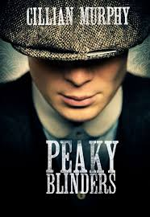
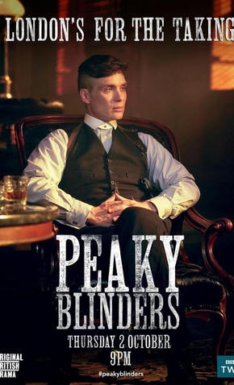
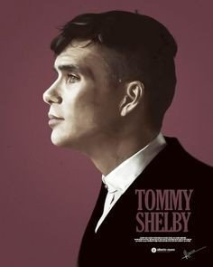
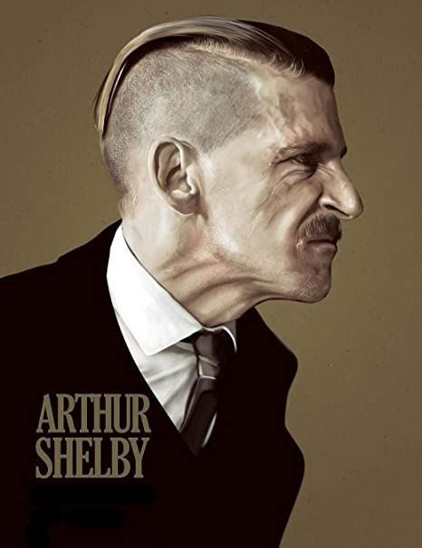
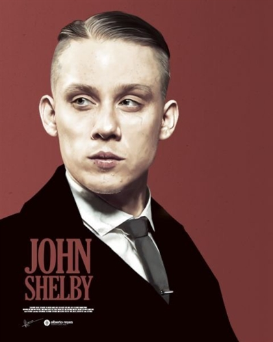
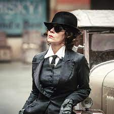
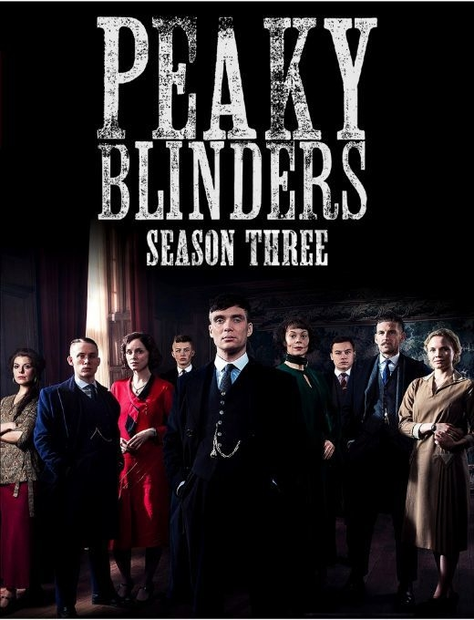

Peaky blinders
Enredo da série:
Os Peaky Blinders são uma organização criminosa de origem cigana que se passa na cidade de Birmingham, Inglaterra, em 1919, formada vários meses após o final da Primeira Guerra Mundial (1914–1918). A história é centrada na ambição do líder da gangue inglesa, Thomas "Tommy" Shelby (Cillian Murphy).
A gangue chama a atenção do major irlandês, Chester Campbell (Sam Neill), um inspetor-chefe de polícia do Royal Irish Constabulary (RIC) de Belfast, Irlanda do Norte, enviado por Winston Churchill, sendo contratado para limpar a cidade do Exército Republicano Irlandês (IRA) (1919–1922), comunistas, gangues e criminosos comuns.Churchill ordenou Campbell eliminar as desordens e rebeliões em Birmingham, visando recuperar um esconderijo roubado de armas que deveria ser enviado para a Líbia Italiana (1934–1943).
Clique na imagem para mais informações:
Curiosidades
4 Curiosidades da série:
1-Cillian Murphy fumou cerca de mil cigarros em uma única temporada:
Cillian Murphy decidiu entrar com tudo no seu personagem e, para isso, não pegou leve com os cigarros. Junto do figurino , o cigarro é um elemento importante na construção dos personagens e ajudam a criar a ambientação. Por isso, apenas na 1ª temporada, Murphy teria fumado cerca de mil cigarros — a soma chega a três mil com a 2ª temporada. Porém, esses cigarros são fornecidos pelo departamento de adereços e feitos de ervas, sem a presença de agentes cancerígenos ou viciantes como a nicotina.
2-Peaky Blinders é baseado em faroestes:
Para o criador da série, Stephen Knight, o cinema western dos Estados Unidos ajudou a consolidar a imagem do cowboy como uma figura importante para a fundação do país. Já no cinema inglês, o mais próximo que existia disso eram os filmes medievais sobre cavaleiros nobres e nunca sobre pessoas marginalizadas. Peaky Blinders buscou influências no faroeste, segundo Knight, desde a cena de abertura, com Tommy Shelby “cavalgando até a cidade” como todo herói cowboy solitário em um filme de faroeste. Birmingham deveria ter a mesma mistura de ilegalidade do Velho Oeste com o sentimento de oportunidade.
3-Cillian Murphy achava que Tommy Shelby morreria na 2ª temporada:
Durante uma entrevista para a GQ, Cillian Murphy comentou que, enquanto lia seu roteiro, começou a pensar que Tommy Shelby morreria rapidamente. O ator disse que, como o personagem não tem medo da morte devido ao tempo que passou nas trincheiras durante a Primeira Guerra Mundial, ele é mais corajoso do que seus inimigos. Para Murphy, a maneira como as situações aconteciam no roteiro só poderiam levar à morte do personagem. Por sorte, não foi o que aconteceu!
4-Muito tempo e cuidado com os cortes de cabelo:
Um dos elementos que mais chama a atenção na estética dos Peaky Blinders é o corte de cabelo. E isso não é por acaso. De acordo com a maquiadora da série, Loz Schiavo, a sua equipe analisou diversas fotos de homens da região de Birmingham da década de 1920 para definir qual seria a melhor referência. O resultado é que, além de ser um elemento marcante, o visual tem sido usado por fãs da série desde a sua 1ª temporada.
Clique na imagem para mais curiosidades:
Personagens
Personagens principais:
Thomas Shelby (Cillian Murphy)

Thomas Shelby é o patriarca da Família Shelby, a família mafiosa envolvida com bebidas, apostas e a gangue criminosa conhecida como Peaky Blinders. Um veterano da Primeira Guerra Mundial, ele é bastante pragmático e pé-no-chão, sempre interessado em aumentar seu poder e melhorar a situação de sua família. Mas Thomas Shelby também tem um lado sensível, marcado por uma vida de traumas e desilusões.
Arthur Shelby Jr. (Paul Anderson)
Carismático e briguento, Arthur Shelby é praticamente um hooligan, sempre criando algum tipo de confusão, e louco para sair na mão com alguém. Ele é parte do alto escalão dos Peaky Blinders, e seu talento para violência serve tanto para ajudar a intimidar em negociações tensas, quanto para complicar a vida do irmão Thomas Shelby e dos demais, já que constantemente toma decisões impulsivas.
John Shelby (Joe Cole)
O terceiro irmão Shelby combina características de Thomas e de Arthur: John Shelby é estrategista o bastante para conseguir lidar com a administração da organização criminosa, mas também é violento e impulsivo para constantemente comprar brigas, especialmente com a polícia e outras gangues.
Polly Gray (Helen McCrory)
Após os irmãos Shelby terem sido abandonados pelo pai (em razão da morte da mãe), foi a tia Polly Gray quem assumiu a tarefa de criar os meninos. Assim, ela se tornou a principal figura materna de Thomas, Arthur, Finn, John e Ada Shelby. Não só ela é a matriarca da família, como também cuida de toda a parte administrativa da organização criminosa, além de frequentemente servir como conselheira para as decisões de Thomas Shelby.
Clique na imagem para conhecer outros personagens da obra:
